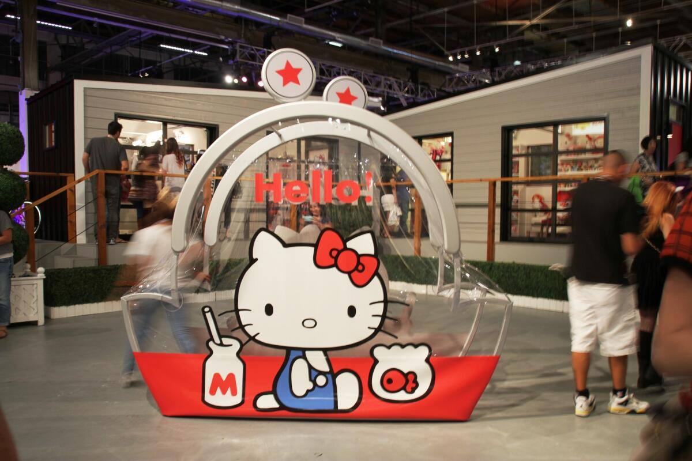

In 2014, Sanrio held a Hello Kitty con in L.A. There they celebrated hello kittys 40th anniversary.
On October 26, 2020, Sanrio Digital Productions publised their first episode of "Hello Kitty and Friends Supercute Adventures"
Above is one of the many episodes of the show, "Hello Kitty and Friends Supercute Adventures"